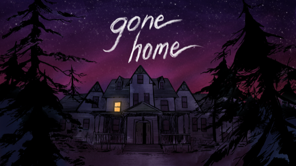

Adventure · 2013
Gone Home
A house, a mixtape and a story told entirely through what people left out.

Cover: Wikipedia: Gone Home
Facts
- Released
- 2013-08-15
- Genre
- Adventure
- Category
- Adventure
- Platforms
- Mobile, Nintendo, PC
- Developers
- Fullbright
- Publishers
- Fullbright
PC requirements
- Minimum
- [object Object]